After a severe lower extremity injury, how to recover faster and avoid reinjury during the recovery? SoleMate is an app designed to solve this problem. Connected with smart shoe insoles via Bluetooth, the app enables patients to receive real-time feedbacks and summaries of their activity.
The Team
SoleMate Solutions
My Role
UI/UX Design, including but not limited to wireframe, prototypes, testing, and visual design.
Communicate and collaborate with team leaders, developers, and my fellow designer.
Concepts & Background
The Problem
Patients with lower extremity injury spend most of their time rehabilitation without being watched by their doctors. Usually, they are required by their doctors to put certain amount of weight on their injured lower extremities, but it is challenging for them to accurately follow the instruction. There are high posibility that patients will reinjure during rehabilitation, since they almost receive no feedback after clinic.

Our Solution
We designed a device composed of two parts, a mobile app and smart shoe insoles . The mobile app provides patients with real-time feedbacks of how much weight they are puting on their lower extremities, based on data transmitted from pressure sensors on the insoles. Thereby, patients are able to adjust the way they walk. The app will also summarize patients' data, so that doctors can give them useful advice based on the summary.
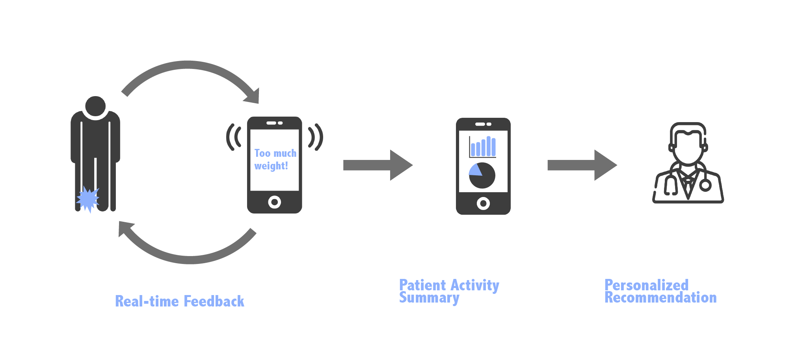 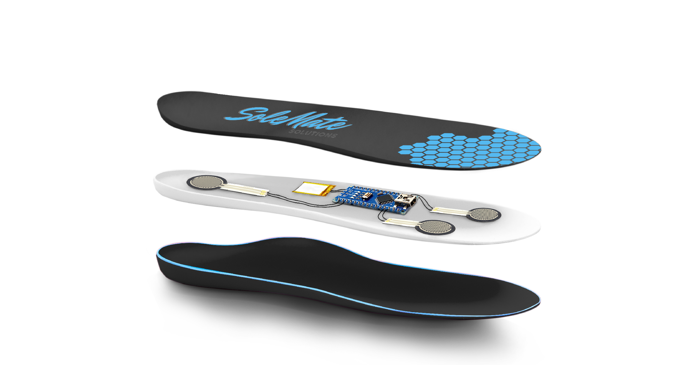Smart insole with three pressure sensors embeded
Storyboard
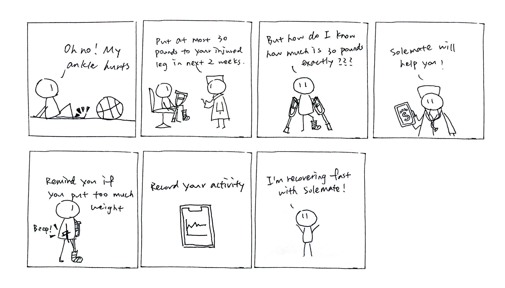Feature Highlights
Onboarding
Users create new accounts, put in their personal information, and add rehabilitation plan. The rehabilitation plan can have multiple sessions. Users will be asked to put in their goal body weight (the percentage of body weight that users should apply to their injured lower extremities per doctors' instructions) when adding each session.
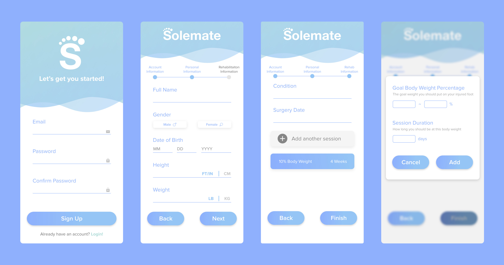Statistics & Device Status
The home page has two parts, users' activity statistics and the status of smart insoles. On the Activity page, the average percentages of body weight applied by users are displayed in linear charts. Users can also find information about their current rehabilitation session. On the Insole page, the battery condition and Bluetooth connection status are provided.
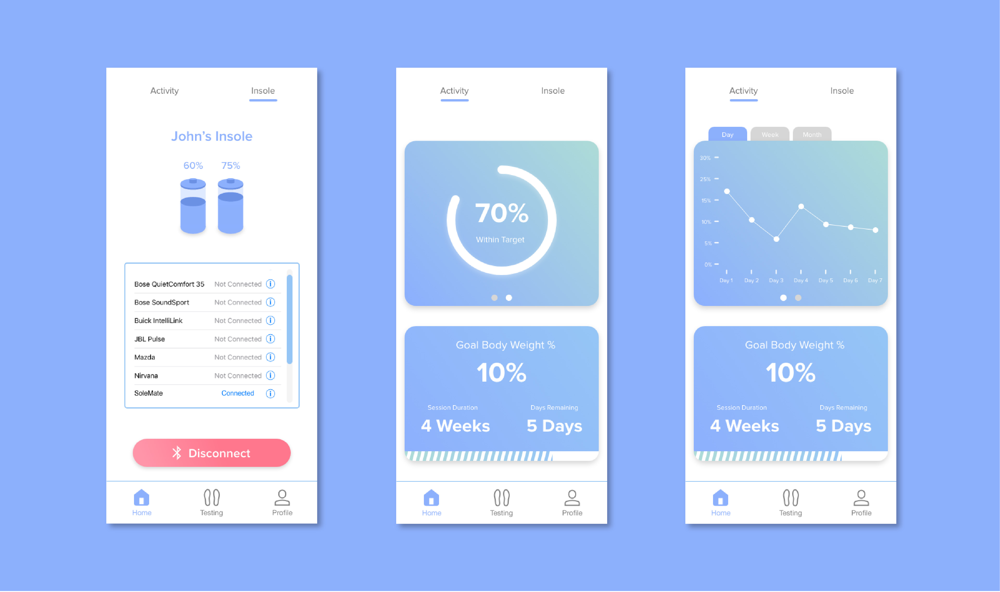Real-Time Feedback Testing
This function is aimed to help users to learn the appropriate way of walking. If users apply weight to their injured lower extremities that exceeds the target range, they will receive sonic feedbacks immediately. The summary and tips will be provided after testings.
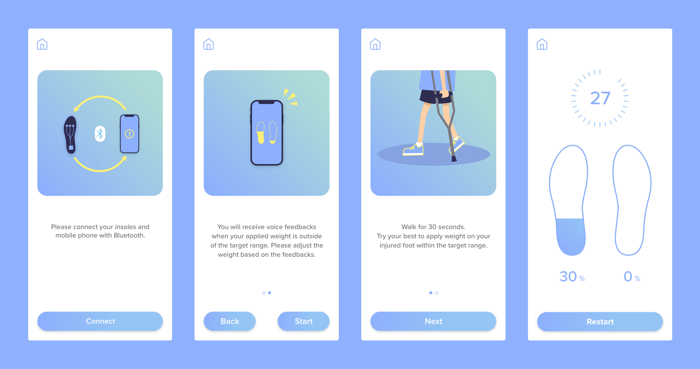Visual Design
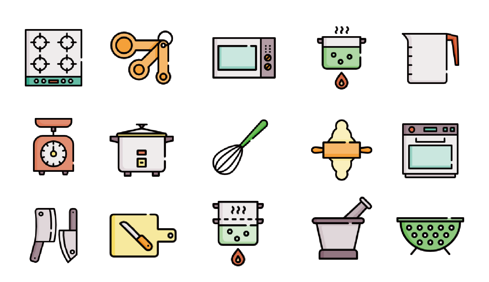
The Making Process
Information Architecture
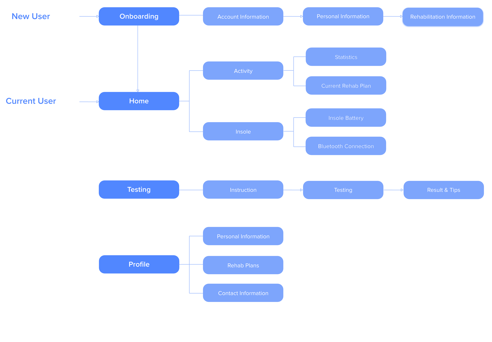Low-Fidelity Prototype
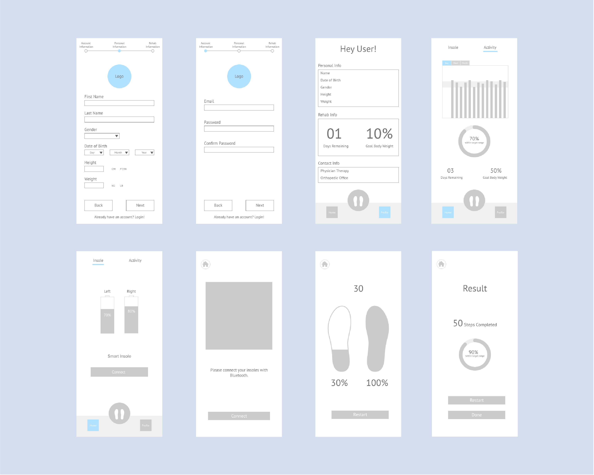High-Fidelity Prototype
High-fidelity prototype is much the same with the pages shown in Feature Hilights above. Below is a screenshort of interactive hight-fidelity prototype we made in Adobe XD.
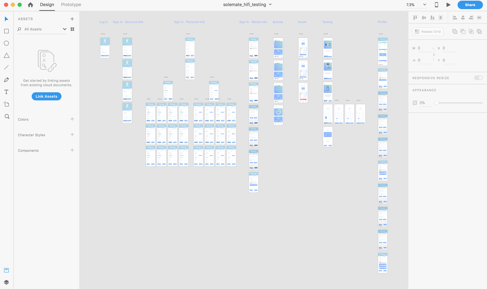Usability Testing
So far, we have done two usability testings, one with low-fidelity prototype and one with high-fidelity prototype. For each time, we selected 6-8 participants. Half of them have experienced lower extremity injury before, and the other half have not. In this way, we got objects who are familiar with lower extremity injury and those who are not as well.
We found several problems after the first testing. The first problem is that the information on Activity page is a little overwhelming. So we split the information on that page and put them in two "cards," the first one showing statistics and the second one showing the current rehabilitation plan. We put "percentage within target range" to the second page of the first card, since this information has lower priority.
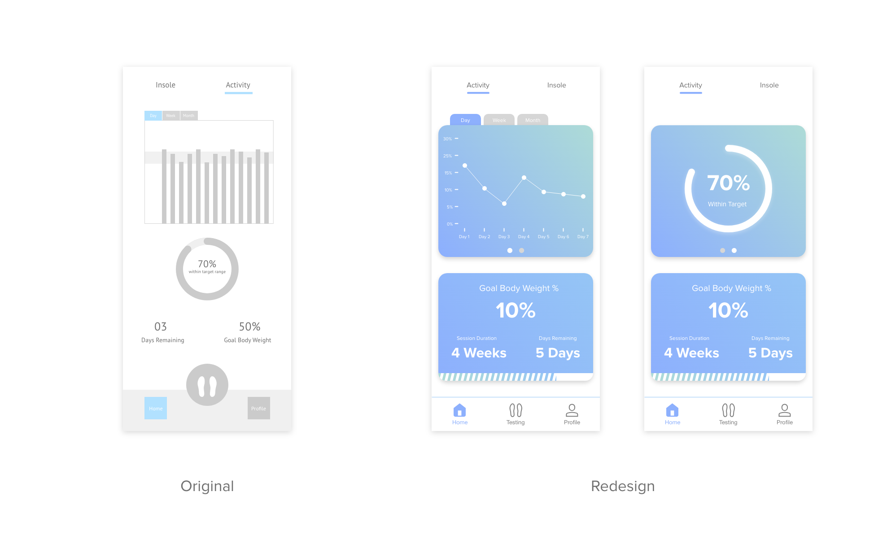Inspired by the participants, we added on Tips on the Result page. Although numbers are important, tips of how to improve users rehabilitation activities are clearer and more direct for users.
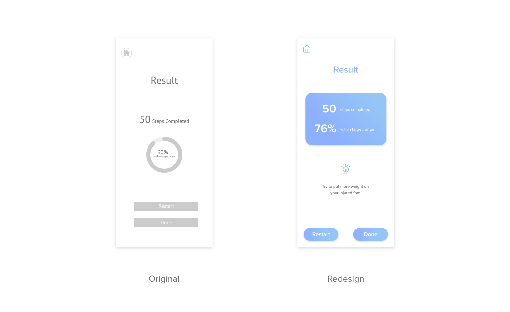There are other parts of redesign not mentioned here. We are now waiting for programming and hardware (the smart insole) to be finished, and will continue to do more usability testings and redesign.


© 2019 Jiayu Luo.